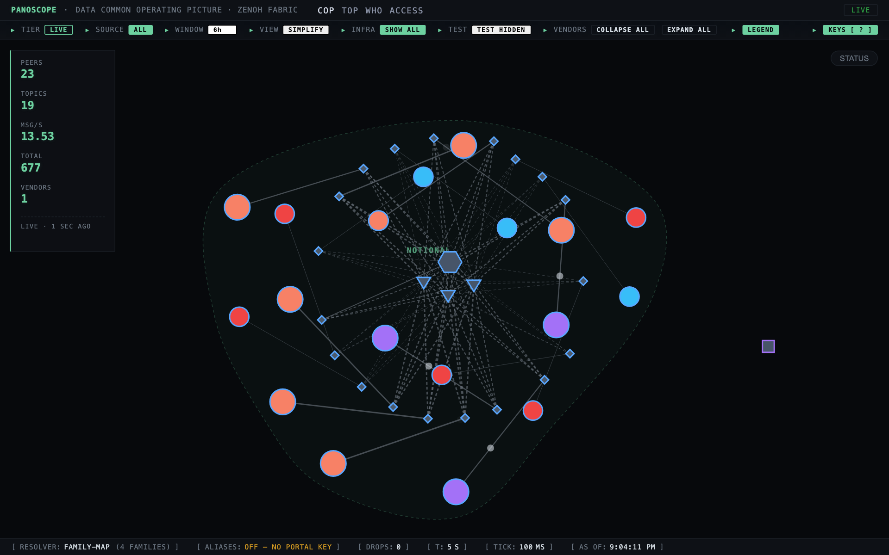
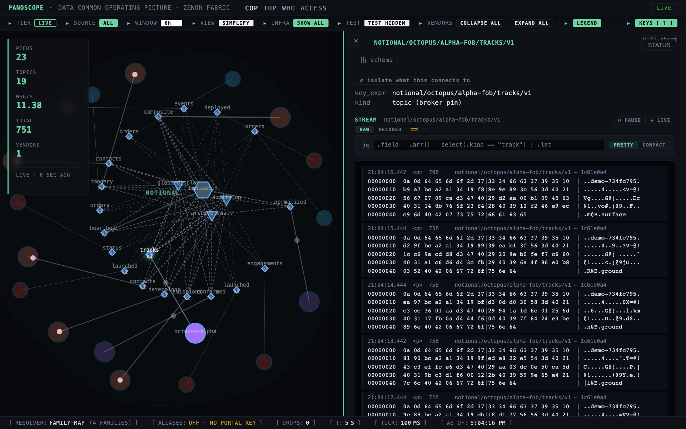
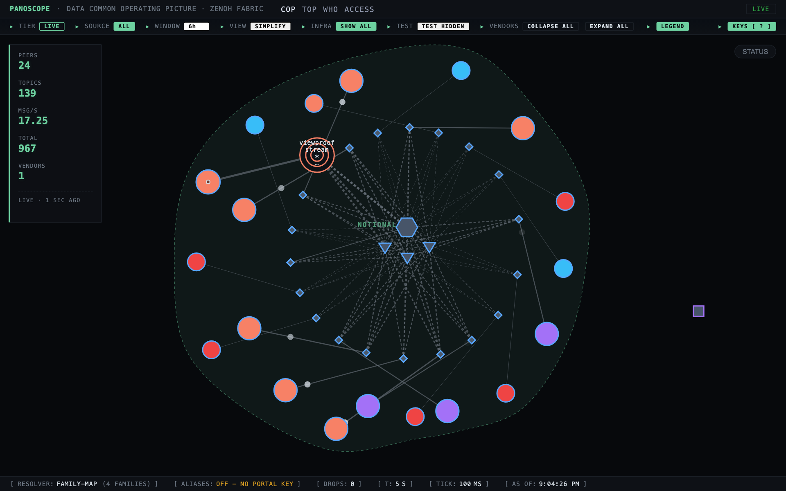
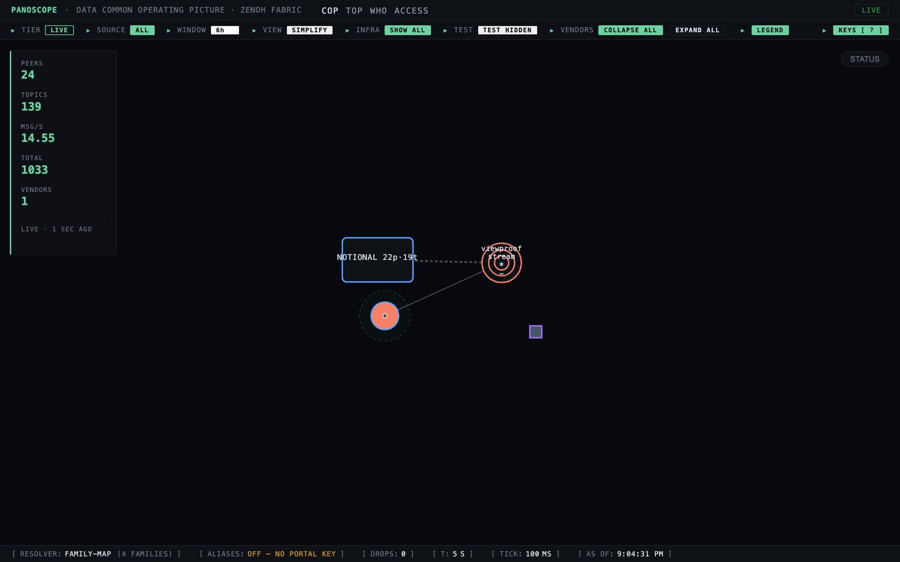

>_ ./demo.sh open
panoscope
Every peer, topic and flow on a goat data fabric, drawn live in the browser.
panoscope watches a Zenoh fabric and publishes nothing. It draws peers as nodes, topics as pins and each sampled publish as a moving dot. One rule on the server decides what fits on the screen, and any topic opens to its live bytes.
$ git clone https://github.com/usareur-af/goatstuff && cd goatstuff/ops/panoscope && ./demo.sh upNeeds Docker. Then open http://127.0.0.1:8080.




One topic opened: its live bytes in the stream pane.
main. The lines are publish_sampled events from its WebSocket in the same run, in order.ls frontend/web/*.html | wc -lgrep -o 'MAX_ELEMENTS: usize = [0-9_]*' src/view/assemble.rsls frontend/web/vendor/*/*.js | wc -lgrep -rE '#\[(tokio::)?test' src | wc -lEach command runs in ops/panoscope of goatstuff. Counted on main at commit 69e8165.
What it is
panoscope is an inspection tool in goatstuff for a goat data fabric. It joins the fabric as a Zenoh client, keeps what it observes in memory, and serves four pages and an HTTP API. You do not need it to run a goatnet. It shows you what the goatnet is doing.
It only reads
It subscribes to ** and queries the router's admin space. A token bucket per topic limits what it records, and nothing a viewer does adds load to the fabric. The source has no put and no publisher.
The server decides what is drawn
A background task rebuilds one model of the fabric. Each viewer's request applies scope, window, filters and one grouping rule to that model. The browser draws the elements it receives and folds nothing.
One binary, pages inside
The pages are plain HTML, CSS and JavaScript modules in frontend/web/, with d3 as one vendored file. rust-embed puts them in the binary at compile time, and the image runs on a distroless base.
One rule decides what fits on the screen
A publisher's topics form a tree of key segments. When more than seven siblings have the same shape, they fold into one family. When a publisher still draws more than 40 units, whole subtrees fold, deepest first, until it fits. Above 5,000 elements in one view, every publisher is grouped again at a smaller budget, and the page says so. The view model describes the rule in full.
In the recorded run, 120 keys under notional/viewproof/stream/ arrived from one publisher. The view counted all of them and drew one family:
$ curl -s -X POST 127.0.0.1:8080/api/view -H 'content-type: application/json' -d '{}' | jq -c '.totals | {topics, groups, elements}'{"topics":139,"groups":1,"elements":143}$ curl -s -X POST 127.0.0.1:8080/api/view -H 'content-type: application/json' -d '{}' | jq -c '.groups[] | {kind, label, topic_count}'{"kind":"family","label":"notional/viewproof/stream/*/…","topic_count":120}
Opening a group opens one level. The same request with that group's id in expand drew ten families of twelve:
{"topics":139,"groups":10,"elements":197}
The rule has its own tests, with publishers from a handful of topics to more than 40,000:
$ cargo test view::grouptest result: ok. 13 passed; 0 failed; 1 ignored; 0 measured; 242 filtered out
Every topic opens to its live bytes
Click a pin and the side panel shows the topic, what it connects to, and a stream of its latest samples. RAW shows a JSON payload as text and any other payload as a hex dump. DECODED shows protobuf fields when the portal supplies the schema. A small jq filter, run in the page, selects fields.
The samples come from a ring buffer per topic in panoscope itself. The page asks for them over HTTP; the WebSocket only says that a new one arrived:
$ curl -s '127.0.0.1:8080/api/samples?topic=notional/octopus/alpha-fob/tracks/v1&limit=1' | jq -r '.entries[0] | .format, .size_bytes, .preview'protobuf7200000000 0a 0d 64 65 6d 6f 2d 37|33 34 66 63 37 39 35 10 | ..demo-734fc795.00000010 9a 88 d7 a2 a1 34 19 12|78 46 03 f4 57 3d 40 21 | .....4..xF..W=@!00000020 55 38 83 c1 84 d3 47 40|29 c4 2c 3b 64 10 d0 58 | U8....G@).,;d..X00000030 40 31 b4 ea 1f 27 5a 2e|22 40 39 d7 da 4b c9 f5 | @1...'Z."@9..K..00000040 2a 76 40 42 03 61 69 72| | *v@B.air
The demo shows the COP; the other pages need a goatnet
The local demo has a Zenoh router and 22 notional peers, and no portal. The COP and its stream pane work in full. The other three pages are built and read sources the demo does not have, so they say that instead of showing data.
COP
The graph, the stream pane, the history window (1 hour to 7 days), the SOURCE, INFRA and TEST filters, and organization collapse.
TOP
Health of the mesh, the fabric, time and presence, and a table of producers. It reads health beats from the goatnet; in the demo every tile reads UNMETERED.
WHO
The roster of identities, with columns for write and read access and onboarding. It needs the portal; in the demo the page says the portal is not configured.
ACCESS labels and grants
The ACCESS page and its queries are built. Its label lanes and grant edges wait for a registry that is designed and not yet built, and the page says so.
Quick start
You need Docker. The first run compiles panoscope and the notional data generator from source; later runs start from the build cache.
git clone https://github.com/usareur-af/goatstuff cd goatstuff/ops/panoscope ./demo.sh up
Open http://127.0.0.1:8080 and give the fabric about 30 seconds to fill. One container runs all 22 notional peers, each with its own Zenoh session. To check from a shell:
$ curl -s http://127.0.0.1:8080/api/snapshot | python3 -c 'import sys,json;d=json.load(sys.stdin);print("nodes",len(d["nodes"]),"edges",len(d["edges"]))'nodes 23 edges 75
To see the grouping rule, put 120 keys on the demo router through its REST plugin:
for s in {0..9}; do for c in {0..11}; do curl -s -X PUT -H 'content-type: application/json' -d "{\"seq\":$c}" "http://127.0.0.1:8000/notional/viewproof/stream/$s/chunk/$c"; done; done
./demo.sh down stops it. The demo guide · Operator runbook · Contributing
Each number, and the command behind it
Run each command in ops/panoscope of a goatstuff checkout. check.py beside this page measures the four numbers of the first screen the same way, and the goatdocs pages workflow runs it against goatstuff main.
| What | Number | How to check it |
|---|---|---|
| Pages | 4 | ls frontend/web/*.html | wc -l: index.html (COP), top.html, who.html, access.html |
| Elements at most on one canvas | 5,000 | grep -o 'MAX_ELEMENTS: usize = [0-9_]*' src/view/assemble.rs |
| Vendored browser libraries | 1 | ls frontend/web/vendor/*/*.js | wc -l: d3/d3.min.js. npm is used only for the Playwright tests. |
| Rust tests in the crate | 256 | grep -rE '#\[(tokio::)?test' src | wc -l. cargo test on main: 251 passed, 5 ignored. The 5 are timing runs, started by hand with --ignored. |